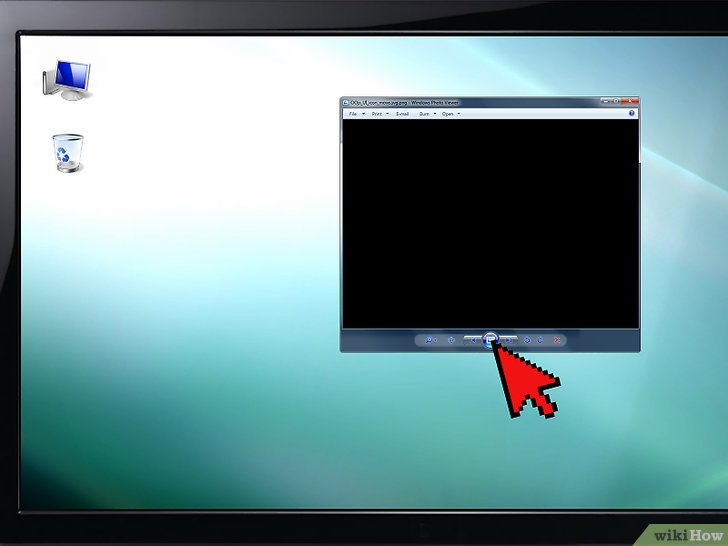
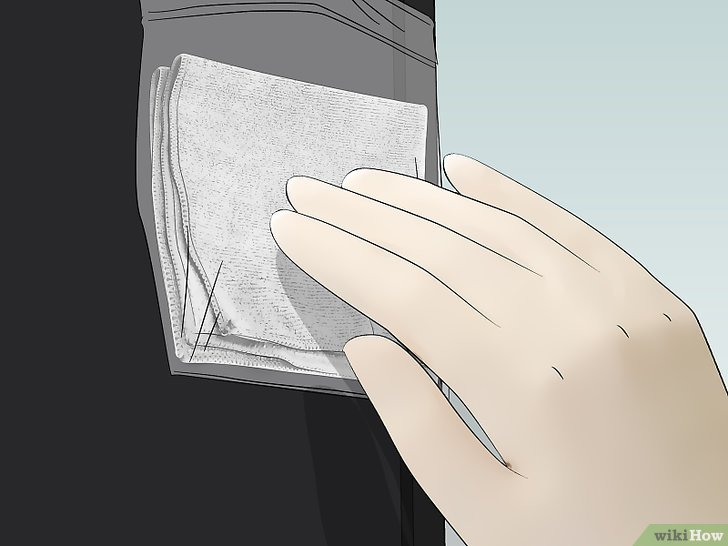

ใช้ความร้อนและแรงกด
1เข้าใจและยอมรับความเสี่ยงที่อาจเกิดขึ้นเมื่อใช้วิธีการนี้. ถึงจะมีบางคนลองเอาวิธีนี้ไปใช้แล้วก็ว่าได้ผลดี ทำให้ stuck pixels กลับมาทำงานตามปกติได้ หลังออกแรงกดหรือใช้ความร้อนช่วย แต่จริงๆ แล้วการทำแบบนั้น เสี่ยงจะทำหน้าจอเจ๊งมากกว่าจะแก้ไขซ่อมแซม
- ข้อเสียอีกอย่างของวิธีนี้ คือทำแล้วประกันมักจะขาดไปเลย
2.เปิดคอมกับหน้าจอ LCD. ต้องเปิดหน้าจอไว้ ถึงจะแก้ปัญหาพิกเซลด้วยวิธีนี้ได้

3.เปิดภาพอะไรก็ได้ที่เป็นสีดำ. สำคัญมากว่าต้องเปิดภาพสีดำขึ้นมาในหน้าจอ ไม่ใช่ปิดจอหรือจอดับเป็นสีดำ เพราะขั้นตอนนี้ต้องอาศัยแสงที่ส่องมาจากด้านหลังของจอ LCD ให้แผงด้านหลังสว่างขึ้นมา

4.หาอะไรเรียวๆ ปลายมน. ที่แนะนำก็เช่น ปากกา Sharpie ที่ปิดฝาไว้ ดินสอทื่อมากๆ เมาส์ปากกาที่เป็นพลาสติก และปลายด้ามแปรงแต่งหน้า เป็นต้น
- ก่อนจะลงมือทำอะไรลงไป แนะนำให้อ่านคำเตือนท้ายบทความนี้ก่อน เพราะอยู่ๆ เอาอะไรไปถูๆ กดๆ ที่หน้าจอ อาจทำให้เสียหายหนักกว่าเดิม

5.เอาผ้ามาหุ้มปลายวัตถุนั้นก่อน. เพื่อป้องกันไม่ให้พื้นผิวแข็งๆ ของวัตถุนั้น ไปขีดข่วนหน้าจอ
- ถ้าวัตถุนั้นทิ่มทะลุผ้าออกมาได้ แสดงว่าแหลมไป ห้ามใช้ ให้หาอย่างอื่นแทน
6.ใช้มุมมนของวัตถุนั้นกดลงไปที่ stuck pixel เบาๆ. จะเห็นแสงสีขาวเป็นคลื่นๆ ตรงจุดที่กดลงไป
- พยายามกดให้โดนเฉพาะจุดที่เป็น stuck pixel อย่าไปโดนบริเวณรอบๆ
7.ผ่านไป 2 - 3 วินาทีแล้วเลิกกด. ถ้ายังเป็น stuck pixel อยู่ ก็กดซ้ำได้ หรือลองใช้ความร้อนแทน แต่ถ้าหายแล้ว ก็ปิดหน้าจอทันที แล้วทิ้งไว้แบบนั้นสักชั่วโมง
8.เอาผ้าขนหนูไปชุบน้ำร้อนให้เปียกหมาด. ให้ต้มน้ำบนเตาจนเริ่มมีฟองผุดที่ก้นหม้อ (น้ำร้อนประมาณ 90 องศาเซลเซียส (190 องศาฟาเรนไฮต์)) จากนั้นใส่ผ้าขนหนูลงไปในชาม แล้วเทน้ำร้อนราด
9.กันลวกมือ. ขั้นตอนต่อๆ ถ้าไม่ระวังอาจทำน้ำร้อนลวกมือตัวเองได้ แนะนำให้สวมถุงมือจับของร้อน หรือใช้ผ้าขนหนูอเนกประสงค์ผืนหนาแทน
10.เอาผ้าขนหนูร้อนๆ ใส่ถุงซิปล็อคแล้วรูดปิด. เพื่อไม่ให้หน้าจอโดนความชื้น ย้ำว่าต้องรูปปิดปากซิปล็อคให้สนิท

11.ใช้ถุงประคบร้อนที่ stuck pixel. ออกแรงกดเล็กน้อยระหว่างนั้น จะช่วยให้ด้านในของพิกเซลคลายตัว และน่าจะแก้ปัญหา stuck pixel ได้
12.กลับไปเช็คสภาพพิกเซลที่มีปัญหา. ถ้ากลับมาเป็นปกติแล้ว ก็ไม่ต้องทำขั้นตอนอื่นต่อ แต่ถ้ายังเป็นอยู่ แสดงว่าคุณแก้ไขอะไรเองแทบไม่ได้แล้ว แนะนำให้ส่งศูนย์หรือร้านรับซ่อมจะปลอดภัยกว่า ไม่ก็รอจน stuck pixel กลับมาเป็นปกติเองเมื่อเวลาผ่านไป
|